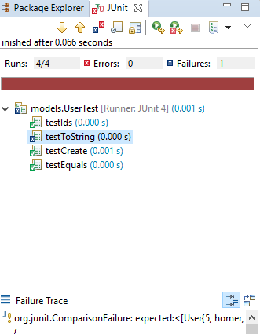
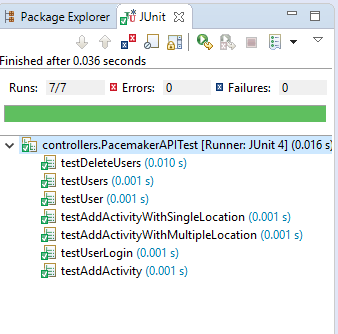

Extend the pacemaker project to include an authentication facility
This lab assumes you have completed the previous lab. The completed solution for the last lab if here:
This lab will update the API and the command line interface to pacemaker to provide a simple authentication/login facility.
To associate each user with a role, add a new public property to the class as follows:
public String role;Now overload the existing constructor in the User class to provide a new constructor that includes role. This retains the old constructor so that we dont break any other parts of the application code that uses it:
public User(String firstName, String last, String email, String password)
{
this(firstName,last, email, password, "default");
}
public User(String firstName, String lastName, String email, String password, String role) {
this.id = counter++;
this.firstName = firstName;
this.lastName = lastName;
this.email = email;
this.password = password;
this.role = role;
}Run the UserTest to check if the new changes have caused any failures. You will notice the toString() test fails. This is bscause it does not include the role property.

Update the test so that it includes role in the test and passes. You may need to alter the counter and id field values to suit your solution:
@Test
public void testToString()
{
assertEquals ("models.User\n{\n \"firstName\": \"homer\",\n"
+ " \"lastName\": \"simpson\",\n"
+ " \"password\": \"secret\",\n"
+ " \"role\": \"default\",\n"
+ " \"activities\": {},\n"
+ " \"counter\": 6,\n"
+ " \"id\": 5,\n"
+ " \"email\": \"homer@simpson.com\"\n"
+ "}", homer.toString());
}We need to add a new public method to the Pacemaker API that allows users to authenticate with their email and password. These fields are already part of the User class. Add the following code to the PacemakerAPI class:
// simplified login method
private Optional<User> user;
public boolean login(String email, String password) {
user = Optional.fromNullable(emailIndex.get(email));
if (user.isPresent() && user.get().password.equals(password)){
log.info(currentUser.firstName + " logged in...");
return;
}
return currentUser;
}Mow add another method to log out the current user:
// simplified and generalised logout method
public void logout() {
Optional<User> user = currentUser;
if (user.isPresent()){
log.info(currentUser.get().firstName + " logged out...");
currentUser = Optional;
}
}You already have a class called Main in the controllers package. Users will now have to log in before they can access other API features. We will only provide a log in command in the Main menu now. Update the Main class with the following code:
public class Main implements ShellDependent {
private static final String ADMIN = "admin";
public PacemakerAPI paceApi;
private Shell theShell;
public Main() throws Exception {
File datastore = new File("datastore.xml");
Serializer serializer = new XMLSerializer(datastore);
paceApi = new PacemakerAPI(serializer);
if (datastore.isFile()) {
paceApi.load();
}
}
public void cliSetShell(Shell theShell) {
this.theShell = theShell;
}
@Command(description = "Log in")
public void logIn(@Param(name = "user name") String userName, @Param(name = "password") String pass)
throws IOException {
if (paceApi.login(userName, pass) && paceApi.currentUser.isPresent()) {
User user = paceApi.currentUser.get();
System.out.println("You are logged in as " + user.email);
if (user.role!=null && user.role.equals(ADMIN)) {
AdminMenu adminMenu = new AdminMenu(paceApi, user.firstName);
ShellFactory.createSubshell(user.firstName, theShell, "Admin", adminMenu).commandLoop();
} else {
DefaultMenu defaultMenu = new DefaultMenu(paceApi, user);
ShellFactory.createSubshell(user.firstName, theShell, "Default", defaultMenu).commandLoop();
}
} else
System.out.println("Unknown username/password.");
}
public static void main(String[] args) throws Exception {
Main main = new Main();
Shell shell = ShellFactory.createConsoleShell("pm", "Welcome to pacemaker-console - ?help for instructions",
main);
shell.commandLoop();
main.paceApi.store();
}
}Add in both the Admin and the Default subshell classes. These will be used by the application to offer the correct commands based on their role.
Create a new class in the controllers package called DefaultMenu and enter the following code:
public class DefaultMenu {
private String name;
private User user;
private PacemakerAPI paceApi;
public DefaultMenu(PacemakerAPI paceApi, User user) {
this.paceApi = paceApi;
this.setName(user.firstName);
this.user = user;
}
@Command(description = "Get a Users detail")
public void getUser(@Param(name = "email") String email) {
User user = paceApi.getUserByEmail(email);
System.out.println(user);
}
@Command(description = "Add an activity")
public void addActivity(@Param(name = "type") String type, @Param(name = "location") String location,
@Param(name = "distance") double distance) {
paceApi.createActivity(user.id, type, location, distance);
}
@Command(description = "Add Location to an activity")
public void addLocation(@Param(name = "activity-id") Long id, @Param(name = "latitude") float latitude,
@Param(name = "longitude") float longitude) {
Optional<Activity> activity = Optional.fromNullable(paceApi.getActivity(id));
if (activity.isPresent()) {
paceApi.addLocation(activity.get().id, latitude, longitude);
}
}
public String getName() {
return name;
}
public void setName(String name) {
this.name = name;
}
}Create a new class in the controllers package called AdminMenu and enter the following code:
public class AdminMenu {
private String name;
private PacemakerAPI paceApi;
public AdminMenu(PacemakerAPI paceApi, String userName) {
this.paceApi = paceApi;
this.setName(userName);
}
@Command(description = "Get all users details")
public void getUsers() {
Collection<User> users = paceApi.getUsers();
System.out.println(users);
}
public String getName() {
return name;
}
public void setName(String name) {
this.name = name;
}
@Command(description = "Create a new User")
public void createUser(@Param(name = "first name") String firstName, @Param(name = "last name") String lastName,
@Param(name = "email") String email, @Param(name = "password") String password) {
paceApi.createUser(firstName, lastName, email, password);
}
@Command(description = "Get a Users detail")
public void getUser(@Param(name = "email") String email) {
User user = paceApi.getUserByEmail(email);
System.out.println(user);
}
@Command(description = "Delete a User")
public void deleteUser(@Param(name = "email") String email) {
Optional<User> user = Optional.fromNullable(paceApi.getUserByEmail(email));
if (user.isPresent()) {
paceApi.deleteUser(user.get().id);
}
}
@Command(description = "Add an activity")
public void addActivity(@Param(name = "id") long id, @Param(name = "type") String type,
@Param(name = "location") String location, @Param(name = "distance") double distance) {
paceApi.createActivity(id, type, location, distance);
}
@Command(description = "Add Location to an activity")
public void addLocation(@Param(name = "activity-id") Long id, @Param(name = "latitude") float latitude,
@Param(name = "longitude") float longitude) {
Optional<Activity> activity = Optional.fromNullable(paceApi.getActivity(id));
if (activity.isPresent()) {
paceApi.addLocation(activity.get().id, latitude, longitude);
}
}
}To test if the code works from the CLI, you will need to add some role fields to the users in the 'datastore.xml' file.
Open the datastore.xml in Eclipse and make Lisa an admin by adding a
Now Run the application as in the previous lab. You will see that you only have one command option at the CLI when it launches:
and '?list-all` for a complete list:
pm> ?list
abbrev name params
li log-in (user name, password)
pm>Now log in as Bart, you should just see the Default commands listed:
pm> ?list
abbrev name params
li log-in (user name, password)
pm> li bart@simpson.com secret
You are logged in as bart@simpson.com
Default
pm/bart> ?list
abbrev name params
aa add-activity (type, location, distance)
al add-location (activity-id, latitude, longitude)
gu get-user (email)
pm/bart>To "log out" type exit. This will take you to the main shell. Then log in as Lisa (the admin) you should now see all the commands are now available
pm/bart> exit
pm> li lisa@simpson.com secret
You are logged in as lisa@simpson.com
Admin
pm/lisa> ?list
abbrev name params
aa add-activity (id, type, location, distance)
al add-location (activity-id, latitude, longitude)
gu get-user (email)
gu get-users ()
cu create-user (first name, last name, email, password)
du delete-user (email)
pm/lisa>We should now update our JUnit tests to include the new methods we've added to the PacemakerAPI.
It's always a good idea to check that you have not made any breaking changes. Run the existing PacemakerAPI and Persistence JUnit tests in the test package and make sure they all still pass.
We need to include some new role data in the test fixtures to add
Open Fixtures.java file and update the users array to include roles:
public static User[] users =
{
new User ("marge", "simpson", "marge@simpson.com", "secret"),
new User ("lisa", "simpson", "lisa@simpson.com", "secret", "admin"),
new User ("bart", "simpson", "bart@simpson.com", "secret", "default"),
new User ("maggie","simpson", "maggie@simpson.com", "secret", "something else")
};Now open the PacemakerAPITest and add the following method to test the login:
@Test
public void testUserLogin() {
// checking with lisa's login(admin)
assertTrue(pacemaker.login(users[1].email, users[1].password));
assertEquals(pacemaker.currentUser.get(), users[1]);
// check logout
pacemaker.logout();
assertEquals(pacemaker.currentUser, Optional.absent());
// check failed login
assertFalse(pacemaker.login(users[1].email, "wrongpass"));
assertEquals(pacemaker.currentUser, Optional.absent());
}Now run the test and check it passes...

You will notice in the code that we are not checking for a authentication or authorisation in the API code. For example, in PacemakerAPI.java, we do not check if the role of the user before performing the deleteUser()